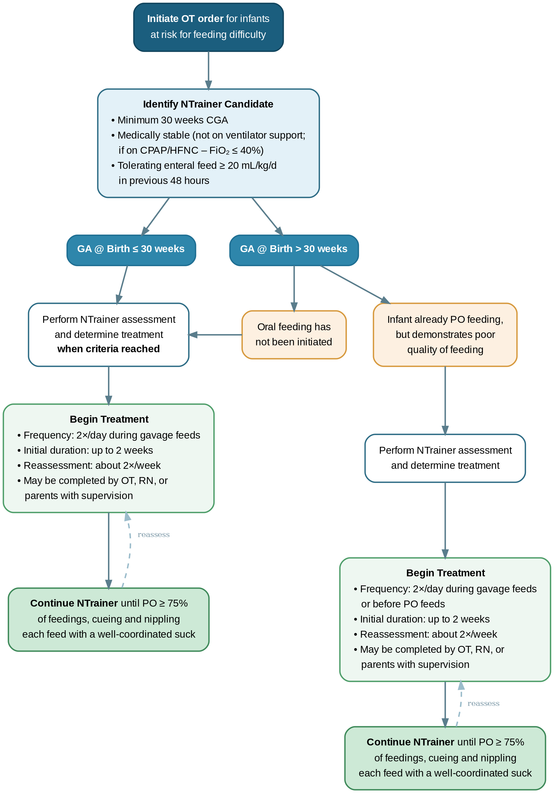

12 Nutrition, Fluid and Electrolytes
12.1 Feeding Advancement Protocol
Click Here to open in a new tab
12.2 Fluid Management
Initial total fluid guide
- Term: 60-80 ml/kg/day
- Preterm ≥ GA 28 weeks: 80 ml/kg/day
- Preterm < GA 28 weeeks: 90-100 ml/kg/day
Glucose infusion rate (GIR)
Formula 1:
\(mg/kg/min\ =\ \displaystyle \frac{(\%\ Dextrose)\ \times\ total\ fluid\ (ml/kg/day)}{144}\)
Formula 2:
\(mg/kg/min\ =\ \displaystyle \frac{(\%\ Dextrose)\ \times\ hourly\ rate\ (ml/hr)}{6\ \times\ weight}\)
Custom fluid builder (Not TPN)
Order code: 66686 Order name: IV Fluid Composer Adjustable Neonatal IV Continuous
12.3 Total Parenteral Nutrition (TPN)
“Standard” concentration
“Standard” concentration is the default concentration for pharmacy
| “Standard” concentration | Na | K | Ca | Phos | Mg |
|---|---|---|---|---|---|
| Peripheral | 30mEq/L | 20mEq/L | 9mEq/L | 9mmol/L | 4mEq/L |
| Central | 30mEq/L | 20mEq/L | 25mEq/L | 12.5mmol/L | 4mEq/L |
| Goal range | 135-145mEq/L | 3-6mEq/L | 8.5-11 mg/dL | 5-8 mg/dL | 1.7-2.8mg/dL |
Monitoring
- Consider frequent monitoring electrolytes, Ca, Phos, and Mg while on TPN for > 50% of total fluid.
12.4 Hyperkalemia
Treatment
- Albuterol
- 0.4mg/kg/dose med nebulizer q2hrs.
- 1 unit dose vial = 3mL = 2.5mg.
- Calcium gluconate
- Lasix
- Insulin
12.5 Hypokalemia
Treatment
KCl 0.5mEq/kg over 2 hrs
12.6 Guide for Selenium Adjustment
Goal for total selenium intake
- ~7–8 mcg/kg/day (TPN + enteral)
Prolacta +6 (Higher Selenium Contribution)
- Preterm EBM + Prolacta +6 (4.5 mcg selenium per 100 mL)
| Enteral Feeds (mL/kg/day) | Enteral Se (mcg/kg/day) | TPN Se (mcg/kg/day) | Total Se (mcg/kg/day) |
|---|---|---|---|
| 60 | 2.7 | 5.0 | 7.7 |
| 80 | 3.6 | 4.0 | 7.6 |
| 100 | 4.5 | 3.0 | 7.5 |
| 120 | 5.4 | 2.0 | 7.4 |
Enfamil HMF (Standard Protein) – Lower Selenium Contribution
- 22 kcal/oz (2.2 mcg selenium per 100 mL)
| Enteral Feeds (mL/kg/day) | Enteral Se (mcg/kg/day) |
|---|---|
| 60 | 1.32 |
| 80 | 1.76 |
| 100 | 2.20 |
- 24 kcal/oz (2.0 mcg selenium per 100 mL)
| Enteral Feeds (mL/kg/day) | Enteral Se (mcg/kg/day) |
|---|---|
| 80 | 1.60 |
| 100 | 2.00 |
| 120 | 2.40 |
Assumptions: Preterm EBM used for calculations. Enteral selenium values exclude TPN.
12.7 Postnatal Enteral Nutrition and Growth
Feeding Advancement Protocol
The NICU Feeding Advancement Calculator.mht file should only be opened using Microsoft Edge browser for the App to be active.
Growth goal
- Weight gain by 15-20 g/kg/day
- Length increase by 0.8-1 cm/week
- Head circumference increase by 0.8-1 cm/week
- Weight/length/head circumference to follow growth chart curve
Nutrition intake goal
- Calories: 120-130 KCal/kg/day
- Protein: 3.0-3.5 g/kg/day [Link]
- Fluids: 120-180 ml/kg/day
Nutrition survelleince
- Obtain Na, Phos, ALP, BUN, every Monday once full enteral feeds achieved
12.8 ESPGHAN Guidelines Links
ESPGHAN: European Society for Paediatric Gastroenterology, Hepatology and Nutrition
Parenteral Nutrition
Last update in 2018:
https://espghan.info/published-guidelines/
- Fluid and electrolytes [Link]
- Energy [Link]
- Carbohydrates [Link]
- Amino acids [Link]
- Lipids [Link]
- Calcium, phosphorous and magnesium [Link]
- Iron and minerals [Link]
- Vitamins [Link]
- Venous access [Link]
Enteral Nutrition
Last update in 2022:
https://www.espghan.org/knowledge-center/publications/Nutrition/2022-enteral-nutrition
- Position paper [Download]
12.9 Oral Care with Colostrum
Target population
Infants of any GA admitted to the NICU < 72 hrs of age who cannot be orally fed safely
Order oral care on admission
Place a PERFORM ORAL CARE order
- Frequency: 3 TIMES A DAY
- Comments: Please provide oral care with colostrum while not orally fed. After each care, please document under Shift NICU / Hygiene / Oral Care with Colostrum
Documentation
Use the dot-phrase .oralcare to pull nursing documentation of oral care into daily progress note, or alternatively, document manually.
12.10 Donor Breast Milk
Eligibility criteria
GA < 32 weeks or BW < 1,500g
Consent
Physician to consent parents verbally, and place proper documentation in the daily progress note.
12.11 Prolacta Prolact+ H2MF Products
Eligibility criteria
- GA < 32 weeks or BW < 1,500g
Remember to update the feeding advancement protocol to reflect Prolacta use as indicated
Protocol
- Use Prolacta instead of HMF when fortifying milk for infants who meet criteria for Prolacta.
- Start at 26 KCal (Prolact +6 H2MF).
- Increase calories per nutritionist recommendations and at rounding neonatologist’s discretion based on the infant’s clinical condition.
QI Project on Prolact+ H2MF cost
- Process measure
- Use Postnatal growth charts to determine fortificationp plan beyond 26KCal/oz
- Outcome measure
- cost of Prolact+ H2MF product
- Balance measure
- Length of stay
- BPD
- ROP
12.12 Prolacta Cream
Eligibility criteria
When using Prolacta Prolac+ H2MF
Note: not to be used before breast milk fortification
Indication
- Overcome fat absorption by gavage tube - feeding rate-dependent
- Overcome low fat content in mother’s milk
Usage
Route
- Administer by itself through gavage tube before fortified milk
- Mix with fortified milk
Volume
Dedepding on the fortified milk feeding volume, three ratios can be used:
- 3mL Cream per 100mL fortified milk - increase calculated calories by 2.4 KCal/oz
- 4mL Cream per 100mL fortified milk - increase calculated calories by 3.1 KCal/oz
- 5mL Cream per 100mL fortified milk - increase calculated calories by 3.9 KCal/oz
Possible combinations
|
Regimen |
Details |
|---|---|
| 1 | 20kcal milk |
| 2 | Cream before milk + 26kcal milk |
| 3 | Cream before milk + 26kcal milk mixed with cream |
| 4 | Cream before milk + 28kcal milk |
| 5 | Cream before milk + 28kcal milk mixed with cream |
| 6 | Cream before milk + 30kcal milk |
| 7 | Cream before milk + 30kcal milk mixed with cream |
Feeding order
Use the .NICUCREAM dot-phrase in the comment field to indicate administration route and volume:
Example:
Please give ***mL of Prolacta Cream followed by ***mL of EBM/DBM with Prolacta +6.
Please add ***mL of Prolacta Cream to 100mL of fortified milk.
| Fortified milk (mL) | 4mL cream per 100mL milk (mL) | 5mL cream per 100mL milk (mL) | 6mL cream per 100mL milk (mL) |
|---|---|---|---|
| 5 | 0.2 | 0.3 | 0.3 |
| 6 | 0.2 | 0.3 | 0.4 |
| 7 | 0.3 | 0.3 | 0.4 |
| 8 | 0.3 | 0.4 | 0.5 |
| 9 | 0.4 | 0.5 | 0.5 |
| 10 | 0.4 | 0.5 | 0.6 |
| 11 | 0.4 | 0.6 | 0.7 |
| 12 | 0.5 | 0.6 | 0.7 |
| 13 | 0.5 | 0.7 | 0.8 |
| 14 | 0.6 | 0.7 | 0.8 |
| 15 | 0.6 | 0.8 | 0.9 |
| 16 | 0.6 | 0.8 | 1.0 |
| 17 | 0.7 | 0.9 | 1.1 |
| 18 | 0.7 | 0.9 | 1.1 |
| 19 | 0.8 | 1.0 | 1.1 |
| 20 | 0.8 | 1.0 | 1.1 |
| 21 | 0.8 | 1.1 | 1.3 |
| 22 | 0.9 | 1.1 | 1.3 |
| 23 | 0.9 | 1.2 | 1.4 |
| 24 | 1.0 | 1.2 | 1.4 |
| 25 | 1.0 | 1.3 | 1.5 |
| 26 | 1.0 | 1.3 | 1.6 |
| 27 | 1.1 | 1.4 | 1.6 |
| 28 | 1.1 | 1.4 | 1.7 |
| 29 | 1.2 | 1.5 | 1.7 |
| 30 | 1.2 | 1.5 | 1.8 |
| 31 | 1.2 | 1.6 | 1.9 |
| 32 | 1.3 | 1.6 | 1.9 |
| 33 | 1.3 | 1.7 | 2.0 |
| 34 | 1.4 | 1.7 | 2.0 |
| 35 | 1.4 | 1.8 | 2.1 |
| 36 | 1.4 | 1.8 | 2.2 |
| 37 | 1.5 | 1.9 | 2.2 |
| 38 | 1.5 | 1.9 | 2.3 |
| 39 | 1.6 | 2.0 | 2.3 |
| 40 | 1.6 | 2.0 | 2.4 |
| 41 | 1.6 | 2.1 | 2.5 |
| 42 | 1.7 | 2.1 | 2.5 |
| 43 | 1.7 | 2.2 | 2.6 |
| 44 | 1.8 | 2.2 | 2.6 |
| 45 | 1.8 | 2.3 | 2.7 |
| 46 | 1.8 | 2.3 | 2.8 |
| 47 | 1.9 | 2.4 | 2.8 |
| 48 | 1.9 | 2.4 | 2.9 |
| 49 | 2.0 | 2.5 | 2.9 |
| 50 | 2.0 | 2.5 | 3.0 |
| 51 | 2.0 | 2.6 | 3.1 |
| 52 | 2.1 | 2.6 | 3.1 |
| 53 | 2.1 | 2.7 | 3.2 |
| 54 | 2.2 | 2.7 | 3.2 |
| 55 | 2.2 | 2.8 | 3.3 |
| 56 | 2.2 | 2.8 | 3.4 |
| 57 | 2.3 | 2.9 | 3.4 |
| 58 | 2.3 | 2.9 | 3.5 |
| 59 | 2.4 | 3.0 | 3.5 |
| 60 | 2.4 | 3.0 | 3.6 |
12.13 Probiotics (Evivo)
12.14 NTrainer Use Regional Guidelines
Workflow overview

Criteria for initiating NTrainer therapy
- For infants ≤ 30 weeks at birth:
- Start training as early as 30 0/7 weeks PMA
- Medically Stable (not on continuous vasopressor medications or invasive ventilator support, if on CPAP, or HFNC Fi02 ≤ 40%)
- Tolerating enteral feed in previous 48 hours
- Tolerating non-nutritive sucking with minimal bradycardic and desaturation events
- For infants > 30 weeks at birth:
- Care team’s concern for the baby’s nipple feeding skills development
- Medically Stable (not on invasive ventilator support, if on CPAP, or HFNC Fi02 ≤ 40%)
Assessment
- All initial assessments are performed by OT/PT.
- OT/PT will place instructions at bedside when nursing and/or family are able to initiate therapy.
- For infants ≤ 30 weeks at birth:
- Initial assessment at 30 weeks PMA.
- If at 30 weeks PMA infant experiences cardiorespiratory event that does not resolve with removing the appliance, repeat assessment at 31 weeks PMA.
- For infants > 30 weeks at birth:
- Timing of initial assessment based on OT/PT evaluation
- Ongoing assessments for all infants: 1-2/week until full PO feeding
Therapy
- Choose NTrainer length of therapy based on OT evaluation:
- Standard therapy mode will be used for all therapy sessions
- NTrainer (Standard program): If PMA < 33 weeks, gavage feeding via pump for at least 20 minutes. Do not attempt to nipple feed until the next feeding.
- Pre-Oral NTrainer (Standard program for one 3-minute cycle then progress to nipple feeding): Pt recommend to transition, If PMA > 33 weeks, Readiness Score < 3 on Infant-Driven Feeding Scale (see Appendix A) and nippling ≥ 1/3 volume in the previous feeding.
- Perform training: 2 times/day (try once per shift):
- Done by OT/PT, bedside nurses, or parents
- Length of NTraining:
- Initiate training for two weeks
- Continue training until PO ≥ 75% of feedings and cueing and nippling each feed with a well-coordinated suck
Usage
- For all infants born at GA ≤ 32 weeks, start upon enteral feeds initiation, discontinue when reaching 34 weeks PMA.
12.15 Breastfeeding and Bonding Education Material
Medications and medical procedures while you are Breastfeeding
MOST medications, medical procedures, and imaging studies DO NOT require you to stop breastfeeding or even temporarily discard your breast milk.
Imaging procedures. Some of the more common imaging procedures and their relative risks:
- X-rays, ultrasound, mammograms, CT scans, and MRIs. Radiation from these tests will not affect your breasts or breast milk.
- Aspiration and breast biopsy procedures. These do not typically affect your breast milk.
Contrast agents for imaging procedures. A small amount of contrast could be excreted into your breast milk (American College of Radiologists- 2021). Since this amount is so small, the available data suggests that it is safe to continue breastfeeding. Oral barium is sometimes used as a contrast agent. Because barium is not absorbed, it will not go into your breast milk.
If you are worried about any potential effects to your child, you may wish to stop breastfeeding for 12 to 24 hours from the time of contrast use. Discard breast milk from both breasts during that time. You may use a breast pump before your procedure, so you have milk to feed your child during the 24 hours after the exam.
Radiation for breast cancer treatment. Radiation can damage breast tissue and decrease milk production. This effect is usually permanent. However, lactation will not be affected on the breast that does not receive radiation. If you have radiation, your child can breastfeed on the other breast.
Surgery with anesthesia. Anesthetic drugs appear in low levels in breast milk. You should continue breastfeeding as soon as possible after surgery (American Society of Anesthesiologists, 2019).
If you temporarily stop breastfeeding, use a breast pump regularly. This helps you keep your milk supply and return to breastfeeding easily, when appropriate.
Ultimately, the decision to temporarily stop breastfeeding is yours.
12.16 THC Use During Breastfeeding
Consultation
Consult all moms with a known history of THC use during or prior to pregnancy, or if toxicology screen is positive for THC, that there is unknown effect of THC on the developing brains, so THC use is strongly discouraged while moms are providing breast milk.
Documentation
Document the following in the Nutrition section of the daily progress note:
Mom verbally agreed to not use any THC products while breast feeding due to neurodevelopmental risks for her newborn